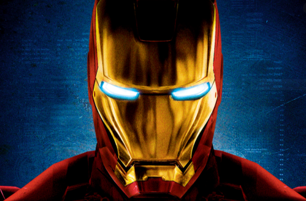
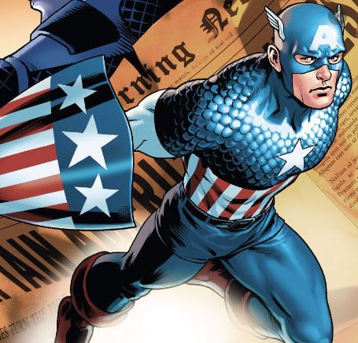

Marvel
Iron Man
Iron Man is a fictional superhero appearing in American comic books published by Marvel Comics. The character was co-created by writer and editor Stan Lee, developed by scripter Larry Lieber, and designed by artists Don Heck and Jack Kirby. The character made his first appearance in Tales of Suspense #39 (cover dated March 1963), and received his own title in Iron Man #1 (May 1968). Also in 1963, the character founded the Avengers alongside Thor, Ant-Man, Wasp and the Hulk.A wealthy American business magnate, playboy, and ingenious scientist, Anthony Edward "Tony" Stark suffers a severe chest injury during a kidnapping. When his captors attempt to force him to build a weapon of mass destruction, he instead creates a mechanized suit of armor to save his life and escape captivity. Later, Stark develops his suit, adding weapons and other technological devices he designed through his company, Stark Industries. He uses the suit and successive versions to protect the world as Iron Man. Although at first concealing his true identity, Stark eventually publicly reveals himself to be Iron Man.Anthony Edward Stark is the son of wealthy industrialist and head of Stark Industries, Howard Stark, and Maria Stark. A boy genius, he enters MIT at the age of 15 to study engineering and later receives master's degrees in engineering and physics. After his parents are killed in a car accident, he inherits his father's company. Stark is injured by a booby trap and captured by enemy forces led by Wong-Chu. Wong-Chu orders Stark to build weapons, but Stark's injuries are dire and shrapnel is moving towards his heart. His fellow prisoner, Ho Yinsen, a Nobel Prize-winning physicist whose work Stark had greatly admired during college, constructs a magnetic chest plate to keep the shrapnel from reaching Stark's heart. In secret, Stark and Yinsen use the workshop to design and construct a suit of powered armor, which Stark uses to escape. During the escape attempt, Yinsen sacrifices his life to save Stark's by distracting the enemy as Stark recharges. Stark takes revenge on his kidnappers and rejoins the American forces, on his way meeting a wounded American Marine fighter pilot, James "Rhodey" Rhodes. Back home, Stark discovers that the shrapnel fragment lodged in his chest cannot be removed without killing him, and he is forced to wear the armor's chestplate beneath his clothes to act as a regulator for his heart. He must recharge the chestplate every day or else risk the shrapnel killing him. The cover story that Stark tells the news media and general public is that Iron Man is his robotic personal bodyguard, and corporate mascot. To that end, Iron Man fights threats to his company (e.g., Communist opponents Black Widow, the Crimson Dynamo, and the Titanium Man), as well as independent villains like the Mandarin (who becomes his greatest enemy). No one suspects Stark of being Iron Man, as he cultivates a strong public image of being a rich playboy and industrialist. Two notable members of the series' supporting cast, at this point, are his personal chauffeur Harold "Happy" Hogan, and secretary Virginia "Pepper" Potts—to both of whom he eventually reveals his dual identity. Meanwhile, James Rhodes finds his own niche as Stark's personal pilot, ultimately revealing himself to be a man of extraordinary skill and daring in his own right. The series took an anti-Communist stance in its early years, which was softened as public (and therefore, presumably, reader) opposition rose to the Vietnam War.[5] This change evolved in a series of storylines featuring Stark reconsidering his political opinions, and the morality of manufacturing weapons for the U.S. military. Stark shows himself to be occasionally arrogant, and willing to act unethically in order to 'let the ends justify the means'.[35][36] This leads to personal conflicts with the people around him, both in his civilian and superhero identities. Stark uses his vast personal fortune not only to outfit his own armor, but also to develop weapons for S.H.I.E.L.D.; other technologies (e.g., Quinjets used by the Avengers); and the image inducers used by the X-Men. Eventually, Stark's heart condition is resolved with an artificial heart transplant.

Captain America
Captain Steven Grant "Steve" Rogers is a World War II veteran, a founding member of the Avengers, and Earth's first known superhero. Rogers grew up suffering from numerous health problems, and upon America's entry into World War II, he was rejected from serving in the United States Army despite several attempts to enlist. Rogers ultimately volunteered for Project Rebirth, where he was the only recipient of the Super Soldier Serum developed by Abraham Erskine under the Strategic Scientific Reserve. The serum greatly enhanced Steve's small and frail body to the peak of human physicality. After Erskine's assassination and being doubted by SSR head director Chester Phillips, Rogers was relegated to performing in war bond campaigns, where he posed as a patriotic mascot under the moniker of Captain America. In 1943, Rogers rejoined the SSR after single-handedly liberating Allied prisoners from a HYDRA base, after which he began leading his team of Howling Commandos in many operations against HYDRA. His World War II exploits made Steve a living legend, and during this time he also formed a close relationship with SSR agent Peggy Carter. Rogers ultimately helped the Allies win the war and defeat HYDRA's leader Red Skull, but crashed into the Arctic during his final mission to stop a plane carrying bombs bound for the United States. Rogers then spent sixty-six years unconscious and frozen in ice under a state of suspended animation, before he was eventually found by S.H.I.E.L.D. in the early 21st century. When he awoke, Rogers found himself alone in a modern world that he hardly recognized, with no idea what to do with his life. Following Loki's theft of the Tesseract from S.H.I.E.L.D., Nick Fury enlisted Rogers' help in retrieving the Tesseract and stopping Loki from destroying the world. Joining the Avengers, Rogers played a key role in the Battle of New York, successfully stopping the invasion, capturing Loki, and reacquiring the Tesseract. Rogers then joined S.H.I.E.L.D. as a counter-terrorist operative. While uncovering a conspiracy inside the organization, he encountered the Winter Soldier, and discovered that HYDRA had infiltrated S.H.I.E.L.D. intending to use Project Insight as a way to bring about a despotic new world order. He then learned that Winter Soldier was his best friend Bucky Barnes, who he thought was killed in action during World War II, but had since been physically enhanced and brainwashed by HYDRA. Alongside Black Widow, Maria Hill and Falcon, Rogers then ended the HYDRA Uprising. Rogers and the Avengers reassembled and then embarked in an all-out war against HYDRA, recapturing the Scepter and capturing Baron Wolfgang von Strucker. Rogers and the team then encountered Ultron, the new peacekeeping artificial intelligence program designed by Tony Stark and Bruce Banner, which had gone rogue and plotted to exterminate humanity. Following a prolonged and brutal conflict in which Vision's creation gave them an advantage, Ultron was defeated during the Battle of Sokovia. Several of the original Avengers then departed, leaving Rogers and Romanoff to lead and train the new Avengers team. The new Avengers conducted several international missions, and during an encounter with Crossbones and his mercenaries, Scarlet Witch failed to contain an explosion triggered by Crossbones, which resulted in the deaths of innocent civilians from Wakanda. The United Nations used the disaster to ratify the Sokovia Accords, but Rogers saw their draconian nature and refused to sign, resulting in a rift between himself and Avengers co-leader Tony Stark. Bucky Barnes then resurfaced as the prime suspect of a terrorist bombing; Rogers chose to protect his best friend, and he and his anti-accord allies became renegades. Upon learning Helmut Zemo was responsible, Rogers fought against Stark and his pro-accord allies before finding Zemo, only for Zemo's schemes to succeed as he revealed to Stark that Barnes assassinated his parents, prompting an enraged Iron Man to attack Barnes. Rogers then engaged in a fierce personal fight with Stark and emerged the victor, but with the Avengers deeply divided. Rogers eventually rescued some of his anti-accord associates from the Raft, and had Barnes sent to Wakanda to be cured of his brainwashing. Rogers, Black Widow, Falcon, and Scarlet Witch subsequently became fugitives, but when Thanos and his Black Order attacked Earth seeking the final Infinity Stones, Rogers emerged from hiding in order to protect Vision. Rogers had Vision brought to Wakanda, while he and Black Panther's army held off the onslaught of Outriders sent down by Thanos. Despite helping to destroy Thanos' army, Thanos effortlessly overpowered Rogers and all the other heroes before killing Vision and taking the Mind Stone. Thanos then snapped his fingers and wiped out half the population of the universe, leaving Rogers to witness many people die. Five years after the Snap, Captain America and his fellow Avengers eventually found a way to safely travel through time using a modified Quantum Tunnel, returning to various points in the past to amass all six Infinity Stones, which Thanos had destroyed before the Avengers found and killed him. The stones were used to resurrect all the lives taken by the Snap, and Captain America participated in the Battle of Earth, where he was deemed worthy of Mjølnir and wielded it in combat against Thanos and his army, who had followed the Avengers forward to the present through the Quantum Tunnel. After Iron Man sacrificed his life to finally defeat Thanos, Rogers attended his friend's funeral before traveling back in time to return Mjølnir and the Infinity Stones. Rogers succeeded and then chose to return to the 1940s, where he married Peggy Carter. Rogers grew old and reunited with his friends in the present, entrusting Sam Wilson with his shield.

Captain America: The First Avenger